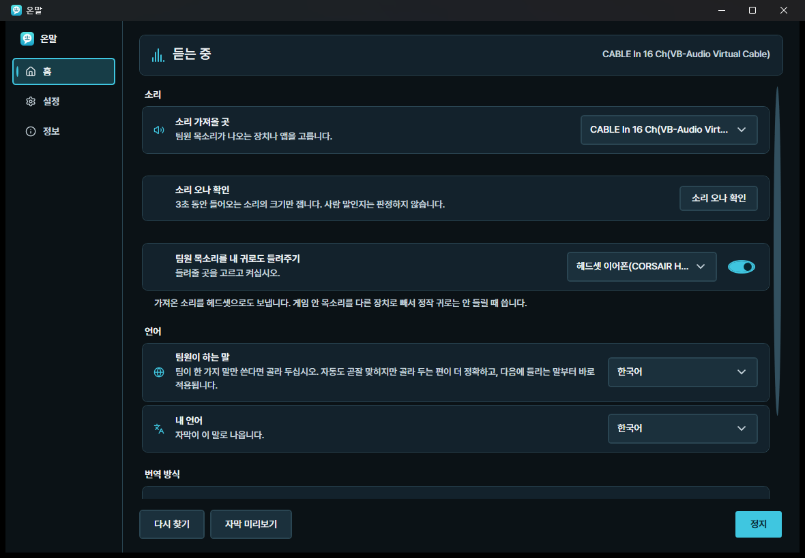
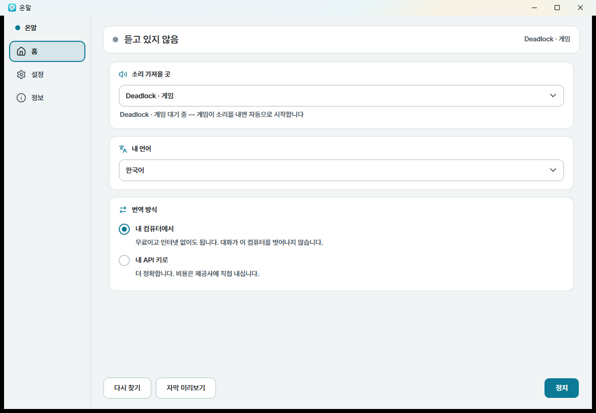
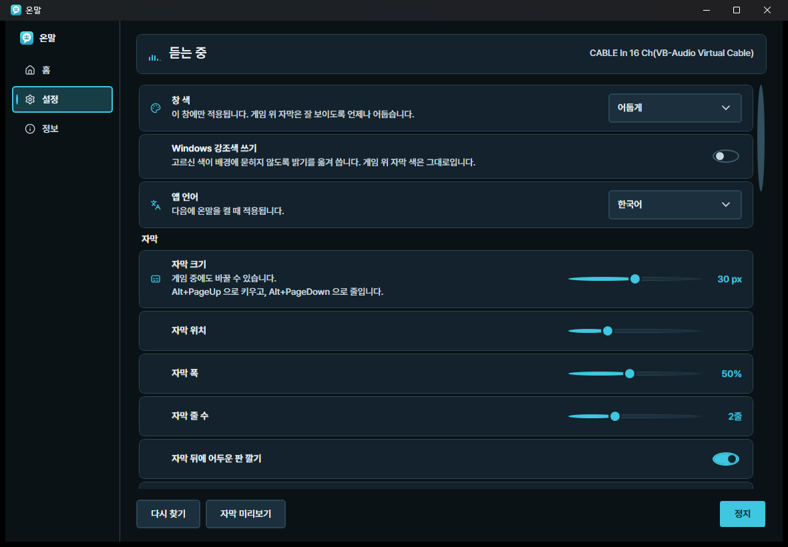
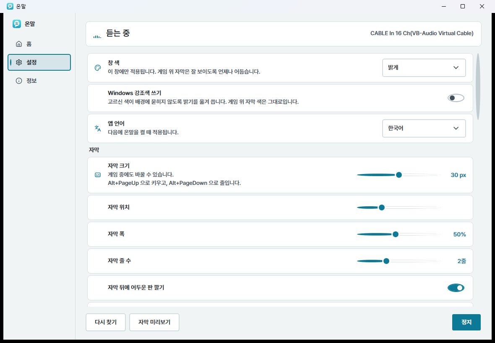
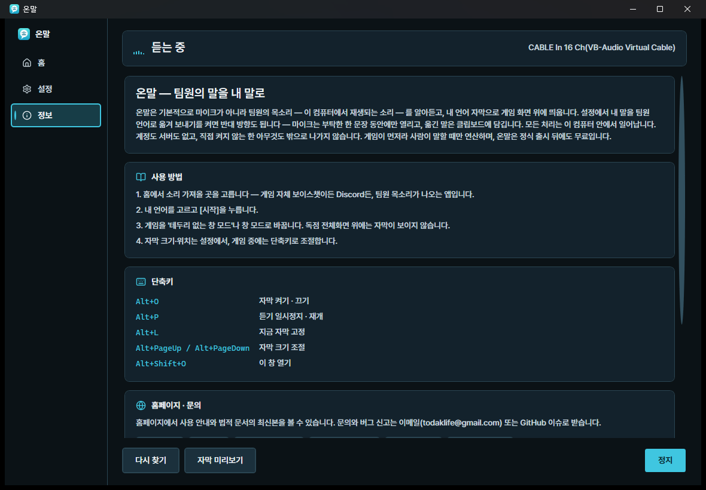
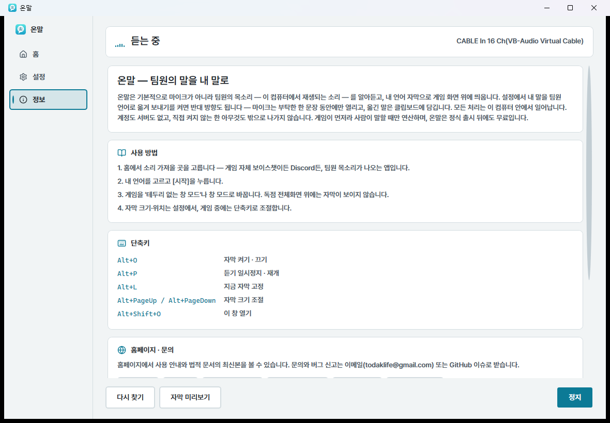

Windows · Steam · 무료
게임 중에 외국인 팀원이 뭐라고 하는지 몰라 콜을 놓치는 일. 온말이 대신 듣고, 화면 위에 번역 자막으로 띄웁니다.
현재 판 0.1.0 · 뼈대가 도는 단계입니다. 아직 알파 전이라 거친 곳이 있습니다.
마이크는 직접 켤 때만 씁니다. 팀원의 소리를 내 컴퓨터 안에서 처리하고, 대화는 어디로도 전송되지 않습니다.
듣고 · 알아듣고 · 옮긴다
네 단계가 사용자 PC 안에서 이어집니다. 서버를 거치지 않으니 왕복 지연이 없고, 인터넷이 끊겨도 계속 동작합니다.
게임 자체 보이스챗이든 Discord든, Windows의 프로세스 단위 캡처로 지정한 앱의 소리만 받습니다. 다른 앱 소리는 섞이지 않습니다.
발화 감지가 사람 목소리 구간만 잘라냅니다. 총성과 배경음은 걸러내고, 조용할 땐 아무 일도 하지 않습니다.
언어를 미리 지정할 필요가 없습니다. 러시아어든 포르투갈어든 감지해서 받아씁니다.
게임을 가리지 않는 자리에, 클릭이 통과하는 자막으로. 조작을 방해하지 않습니다.
게임 말
번역기는 "빛 사이트"를 모릅니다. 게임에서만 쓰는 말이 일반 번역을 만나면 뜻이 아예 사라집니다. 온말은 옮기기 전에 그런 말을 먼저 바로잡습니다.
"적 두 명이 빛 사이트로 가고 있어"를 그대로 넣으면 non-net 이라는 말이 나옵니다. 팀원은 무슨 소린지 알 수 없습니다.
같은 문장이 Two enemies headed for B site. 가 됩니다. "빛 사이트"를 "B 사이트"로 먼저 바로잡은 뒤에 옮기기 때문입니다.
바로잡는 것은 모델이 아니라 정해진 문자열 치환입니다. 목록에 있는 말만 바뀌고, 없는 말은 건드리지 않습니다. 번역이 제멋대로 달라질 여지가 없습니다.
모두 266개이고, 같은 말의 다른 표기를 190개 더 알고 있습니다 — "비 사이트"도 "비사이트"도 같은 곳을 가리킵니다. 앱 안에서 팩을 켜고 끄고, 무엇이 들었는지 보고, 내가 쓰는 말을 더할 수 있습니다.
지금은 한국어 ↔ 영어 두 방향뿐입니다. 다른 언어쌍의 용어집은 아직 없습니다.
실제 화면
꾸민 그림이 아니라 앱을 띄워 그대로 찍은 화면입니다. 창은 세 개뿐입니다 — 홈에서 고르고, 설정에서 다듬고, 정보에서 확인합니다.






홈 — 소리 가져올 곳과 내 언어. 정할 것은 이 둘뿐입니다. 설정 — 자막 크기·위치, 창 색, 앱 언어. 밝게·어둡게 둘 다 있습니다. 정보 — 사용 방법과 단축키, 그리고 법적 문서. 인터넷 없이도 읽힙니다.
소리
컴퓨터에서 나는 소리를 전부 받아 거르는 방식이 아닙니다. 팀원의 목소리가 나오는 앱 하나를 지정하면, 그 앱의 소리만 들어옵니다.
Windows가 앱 단위로 소리를 내주는 길이 있습니다. Discord를 고르면 Discord 소리만 들어옵니다. 그 앱이 자식 창을 따로 띄워 소리를 내보내도 함께 잡습니다.
[소리 오나 확인]을 누르면 고른 곳을 3초 동안 잡아 소리가 들어오는지만 재고 놓습니다. 녹음하지 않고, 무슨 말인지도 보지 않습니다.
자막을 읽어주는 동안에도 팀원의 원래 목소리가 끊기지 않게 스피커로 함께 흘려보낼 수 있습니다. 기본은 꺼져 있습니다.
가상 케이블을 설치하라고 하지 않습니다. 이미 컴퓨터에 있는 재생 장치 중에서만 고릅니다. 소리 장치를 새로 깔면 되돌리기가 번거롭고, 잘못 건드리면 게임 소리가 통째로 사라집니다.
게임 자체 보이스챗은 게임 소리와 같은 앱에서 나옵니다. 그쪽을 고르면 총성·발소리도 함께 들어와 알아듣기가 나빠집니다. Discord처럼 따로 도는 앱이 가장 깨끗합니다. 어느 쪽이 되는지는 [소리 오나 확인]으로 직접 보십시오 — 게임마다 다릅니다.
손
교전 중에 창을 찾아 누를 시간은 없습니다. 자주 쓰는 것은 전부 키 하나로 둡니다.
Alt+M 은 클립보드까지만 합니다. 붙여넣기는 사용자가 직접 합니다 — 온말이 게임 창에 대신 입력하는 일은 없습니다. 마이크는 누른 그 순간에만 열리고, 한 마디가 끝나면 곧바로 닫힙니다. 말이 없으면 15초 뒤에 스스로 닫힙니다.
누르고 있는 동안이 아니라 한 번 누르면 한 문장입니다. 키를 언제 뗐는지 알려면 키보드 입력을 통째로 엿보는 방법을 써야 하는데, 그것은 안티치트가 문제 삼는 종류라 쓰지 않습니다.
이름의 뜻
'온'은 '온 세상', '온종일'처럼 빠짐없이 전부를 뜻하는 순우리말입니다. 어떤 언어든 흘려듣지 않고, 팀원의 말을 온전하게 내 말로 옮기는 것 — 이 앱이 하려는 일을 이름에 담았습니다.
비서처럼
소리를 가져올 앱과 내 언어만 고르면 끝입니다. 설치된 게임은 알아서 찾아 주고, 게임을 골라 두면 켜지는 순간 자막이 자동으로 시작됩니다.
기본 번역은 무료로 내장돼 있습니다. 더 정확한 번역이 필요하면 본인의 API 키를 넣어 쓸 수 있습니다. 키는 이 컴퓨터에만 암호화되어 저장됩니다.
음성은 메모리에서 처리하고 버립니다. 기본 설정에서는 녹음도, 업로드도, 계정도 없습니다.
먼저 알려드립니다
설치하고 나서 알게 되는 것보다, 지금 아는 편이 낫습니다.
게임을 '테두리 없는 창 모드' 또는 '창 모드'로 실행해야 자막이 화면 위에 올라옵니다. 대부분의 게임이 설정에서 바꿀 수 있습니다.
지정한 앱의 소리만 골라 듣는 기능은 Windows 11(또는 Windows 10 빌드 20348 이상)에서 동작합니다. 그 이하에서는 시스템 소리 전체를 받습니다.
총성과 고함이 섞인 음성은 사람도 못 알아듣습니다. 온말도 마찬가지입니다. 틀렸을 때는 틀렸다고 표시합니다.
게임 프로세스에 어떤 코드도 주입하지 않습니다. 안티치트에 걸릴 만한 동작을 하지 않는다는 뜻이고, 대신 위의 창 모드 제약이 생깁니다.
사양
| 최소 | 권장 | |
|---|---|---|
| 운영체제 | Windows 10 64-bit (21H2) | Windows 11 |
| 프로세서 | 4코어 · AVX2 (인텔 6세대 / 라이젠 1세대 이상) | 6코어 이상 (인텔 i5-10400 / 라이젠 5 3600 급) |
| 메모리 | 8 GB | 16 GB |
| 그래픽 | 없어도 됩니다 — CPU 모드로 동작 (자막이 조금 늦어집니다) | Vulkan 1.2 GPU — GeForce GTX 1650 이상 · Radeon RX 6600 이상 · Intel Arc A580 이상, 게임 실행 후 VRAM 1 GB 여유 |
| 저장 공간 | 2 GB | 5 GB (추가 언어쌍·높은 정확도 모델) |
| 자막 지연 | 약 1.2~1.5초 (CPU) | 약 0.7초 (GPU) |
이 숫자는 단계별로 따로 잰 값(발화 감지 · 인식 · 번역)을 더한 것이고, NVIDIA RTX 4060 기준입니다. 팀원이 말한 순간부터 화면에 글자가 뜰 때까지를 통째로 잰 값은 아직 없고, 게임을 돌리면서 잰 값도 아직 없습니다 — 둘 다 알파·베타에서 재어 공개합니다. AMD·인텔 GPU도 같은 Vulkan 경로를 쓰지만 재보지 않았습니다. 정확도는 이 컴퓨터의 GPU 메모리에 맞춰 자동으로 골라지고, 설정에서 언제든 바꿀 수 있습니다.
언어
인터페이스와 이 홈페이지는 스팀 전체 지원 언어 31개로 제공합니다. 음성 인식은 그보다 훨씬 넓은 범위를 다룹니다.
앞으로
각 단계는 달력이 아니라 완료 기준을 채워야 넘어갑니다. 서두르지 않고, 본체는 끝까지 무료입니다.
최종 그림은 보이스 채팅 앱처럼, 게임할 때마다 늘 켜두는 편안한 동반자입니다. 설치하고 잊어버려도 — 외국어 콜이 들리는 순간, 온말이 조용히 일합니다. 새 플랫폼이 되려는 것이 아닙니다: 번역의 완성도에 집중하고, 소셜은 이미 쓰고 있는 스팀·디스코드 위에 가볍게 얹습니다.
자주 묻는 질문
네. 본체는 지금도, 정식 출시 후에도 무료입니다. 계정도, 결제도, 광고도 없습니다.
온말은 게임 프로세스에 아무 코드도 넣지 않습니다. 게임 입장에서 온말은 화면 위에 떠 있는 별개의 창일 뿐입니다. 다만 최종 판단은 각 게임사의 몫이므로, 대회처럼 민감한 자리에서는 주최 측 규정을 먼저 확인하세요.
특정 게임 전용이 아닙니다. 게임을 '테두리 없는 창 모드'로 실행할 수 있으면 자막을 띄울 수 있습니다. 소리는 게임 내 보이스챗이든 Discord든, 팀보이스가 나오는 앱을 고르면 됩니다.
처음에 인식 모델을 받을 때만 필요합니다. 그 뒤로는 인식과 번역 모두 내 PC에서 처리되므로 인터넷 없이도 동작합니다.
기본적으로는 아닙니다. 켜지 않는 한 온말은 마이크를 쓰지 않고, 팀원의 목소리 — 내 컴퓨터에서 재생되는 소리 — 만 알아듣고 내 화면에만 자막으로 띄웁니다. 다만 설정에서 내 말을 팀원 언어로 옮겨 보내기를 켜면 한 번에 한 문장씩 팀원의 언어로 옮겨 클립보드에 담아 줍니다. 마이크는 그 순간에만 열리고, 게임 채팅에 붙여넣는 것은 이용자 본인입니다.
'게임이 먼저'가 설계 원칙입니다. 사람이 말할 때만 연산하고, 그래픽 메모리 여유에 맞춰 인식 모델을 자동으로 고르고, 무거운 기능은 기본으로 꺼 둡니다. 기종마다 다를 수 있어 알파·베타에서 게임과 동시 구동을 실측해 공개할 예정입니다.
법적 고지
온말은 서버가 없고 계정을 만들지 않습니다. 그래서 문서도 짧습니다. 앱 안(정보 화면)에서도 같은 문서를 볼 수 있습니다.